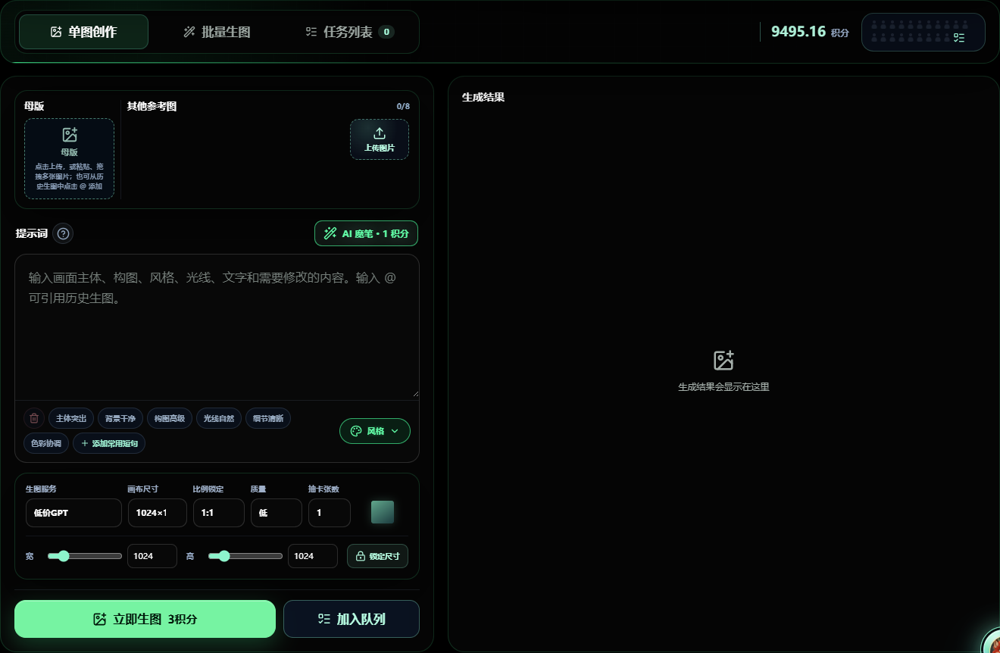
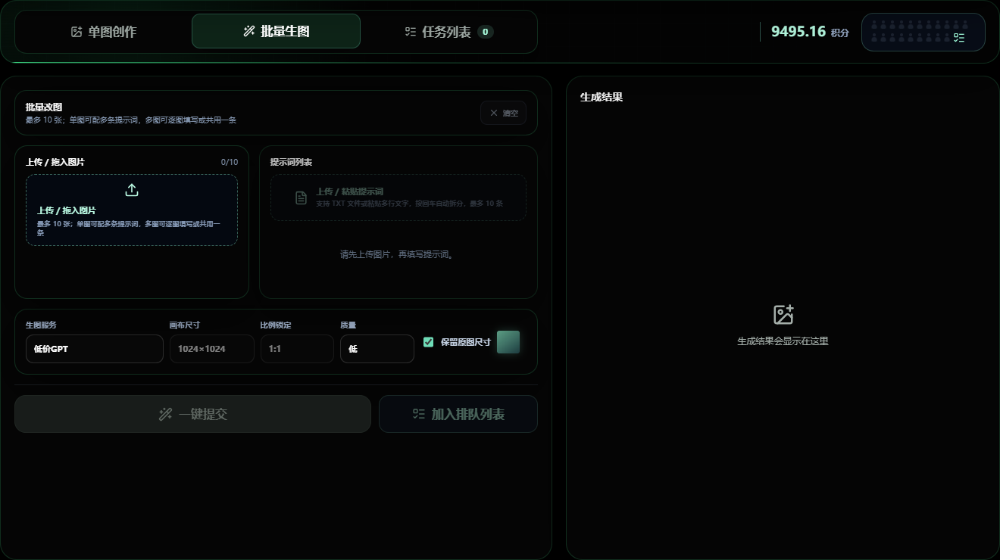
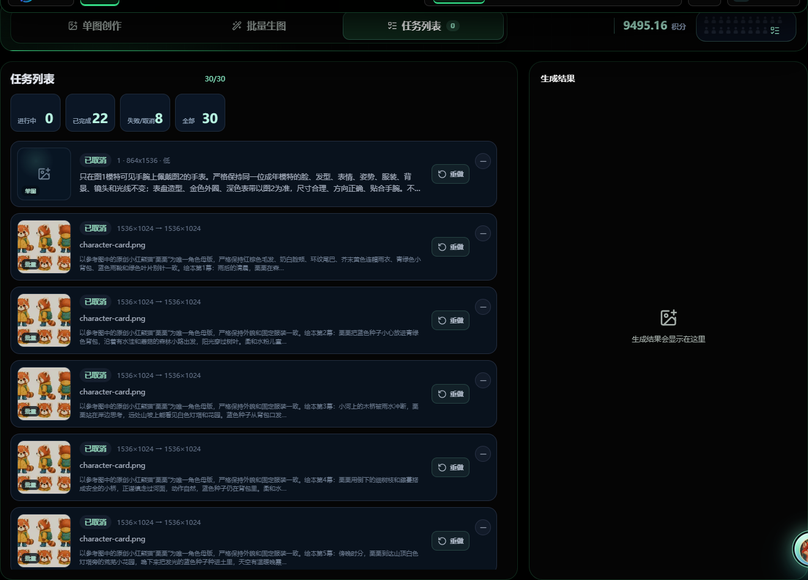

母版与其他参考图
母版用于确定主要对象、身份或结构，自动记为“图1”。其他参考图用于补充人物、风格、构图、颜色或细节，编号从“图2”顺延。
适合自由创作、参考图改造、局部修图和批量生产。单图创作负责精细控制，批量生图负责规模化，任务列表负责追踪状态。
左侧完成输入与设置，右侧查看生成结果，下方保留历史生图与范例。顶部三个按钮切换单图、批量和任务列表。

母版用于确定主要对象、身份或结构，自动记为“图1”。其他参考图用于补充人物、风格、构图、颜色或细节，编号从“图2”顺延。
纯文字生图可以直接填写提示词。改图、保持人物或商品一致性时，应先上传清晰母版。
可以上传、粘贴、拖入图片，也可以从历史生图和资产库复用。清空历史不会等同于删除资产库原文件。
单个参考图文件上限 7MB。实际可用格式、参考图数量和最大尺寸会随所选模型变化，界面会即时校验。
把最重要、最需要保持一致的图片放进“母版”。辅助角度、服饰、风格或场景放入“其他参考图”。只有局部需要改变时，点击母版上的编辑按钮涂抹目标区域。
推荐顺序：主体与动作 → 构图与镜头 → 场景与光线 → 风格与质感 → 必须保持和禁止改变的内容。引用图片时直接写“图1”“图2”。
提示框底部可点常用修饰词；点击绿色“风格”按钮展开三列风格托盘，用缩微图确认真实视觉方向，选定后托盘自动收起。
依次确认生图服务、画布尺寸、比例锁定、质量和生成数量。自定义尺寸必须通过当前模型校验；锁定比例后，修改一边会联动另一边。
“立即生图”马上提交；“加入队列”适合连续安排任务。结果出现后可放大预览、下载、收藏、继续作为参考图或进入局部修改。


最多上传 10 张图片、保留 10 条提示词。上传 TXT 或一次粘贴多行文字时，系统会按行自动拆分。

| 输入情况 | 匹配规则 | 适合场景 |
|---|---|---|
| 1 张图 + 1～10 条提示词 | 同一张图分别执行每条提示词 | 一件商品做多个场景、一个人物做多种造型 |
| 多张图 + 1 条提示词 | 所有图片共用同一条提示词 | 统一背景、色调、规格或处理规则 |
| 多张图 + 等量提示词 | 图片与提示词按序号 1 对 1 | 每张图执行不同修改 |
| 多张图 + 提示词过多 | 超出图片数量的高序号栏目暂时不可写，但仍可拖动换位 | 先整理任务顺序，再补图片或删减提示词 |

队列中的任务尚未开始；处理中表示上游模型正在执行。未完成任务数量有上限，避免一次堆积过多。
只有支持取消且仍在运行的任务才能取消。是否退回积分以任务最终状态和系统提示为准。
先阅读错误信息，常见原因包括参考图超限、格式不支持、尺寸不合法、模型渠道不可用或等待超时。修正后再重新提交。
可以预览、下载、收藏、重新使用提示词，并把结果作为下一轮母版或参考图继续迭代。
选最清晰的正面或主体完整图为母版，提示词明确列出不可改变项，并只把辅助用途交给其他参考图。
逐项检查：是否选择模型、尺寸是否合法、参考图数量或格式是否超限、提示词是否满足当前模式规则。
缩小涂抹区域，并在提示词中重复强调“仅修改标记区域，其他区域保持不变”。